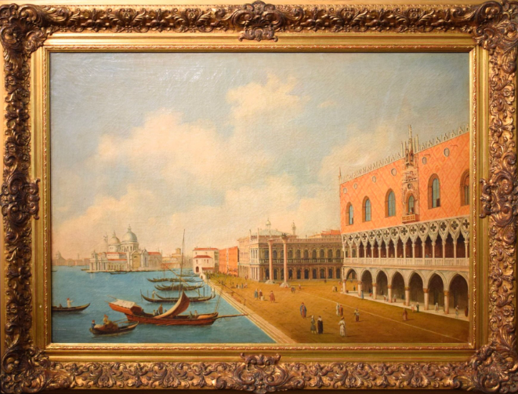

Venice's architecture is a unique blend of Byzantine, Gothic, and Renaissance styles. The Venetian architectural style is characterized by open loggias, intricate stonework, round-arched windows, and focus on light reflected from the water. The city stands on a massive and deeply embedded wooden foundation which makes it appear as if the buildings are floating on water.
\
Venetian artwork puts an emphasis on dimension through color, light, and atmosphere. It was the first to use oil paint on a canvas in order for colors to be vibrant. Venetian artworks often feature visible brushstrokes and the artstyle is realistic and expressive.

Rather than pasta, Venetian cuisine is heavy with seafood, which makes it distinct from other Italian culinary traditions. Some foods include crab, Risotto, Polenta E Schie, and Tramezzini. There are also desserts such as brioche veneziana, crema fritta, and the most famous tiramisu.

Venice is over 1,600 years old and has many stories to be told. Venice was one of the greatest trading powers in midieval and Renaissance Europe, known for glassmaking, music, and printing. It controlled trade between Europe and the East before it was conquered by Napoleon Bonaparte, only to fall under Austrian control. 1866 marked the end of foreign rule over Venice and it became a city within the kingdom of Italy. See the world-class museums in Venice for more information!
There are many activities in Venice to enjoy the view and the culture. You can go on a romantic gondola ride through the narrow canals and look at the beautiful bridges in awe. You can even attend a mask-making workshop, as Venice was known for its unique style of masquerade masks. Additionally, you can visit the famous Libreria Acqua Alta, known for keeping its books in bathtubs and boats to keep them floating.